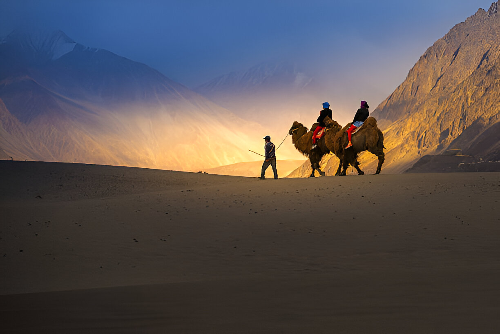

About Ladakh (The Land of High Passes)
Ladakh is known for its rugged mountains, Buddhist monasteries, and adventure sports. It is a dream destination for bikers and nature enthusiasts.
Popular Spots
- Pangong Lake
- Nubra Valley
- Magnetic Hill